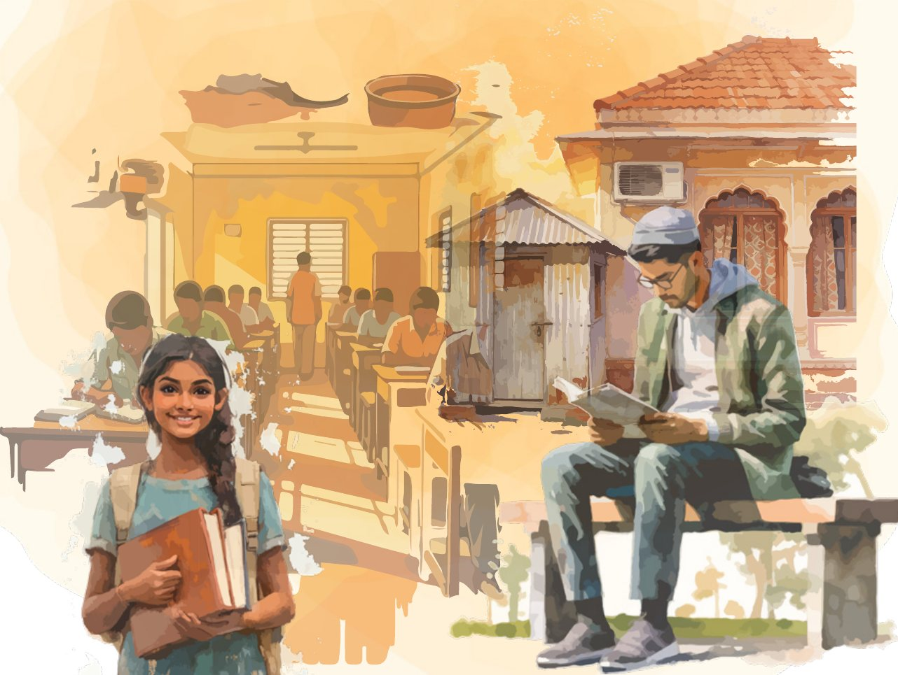
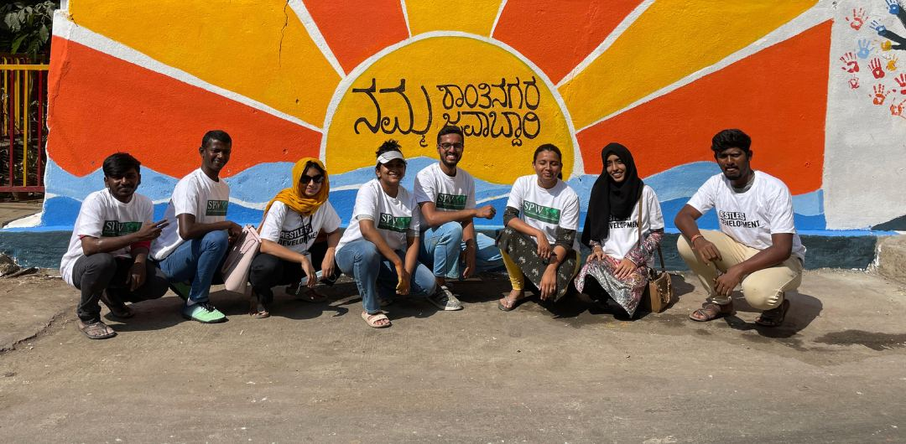
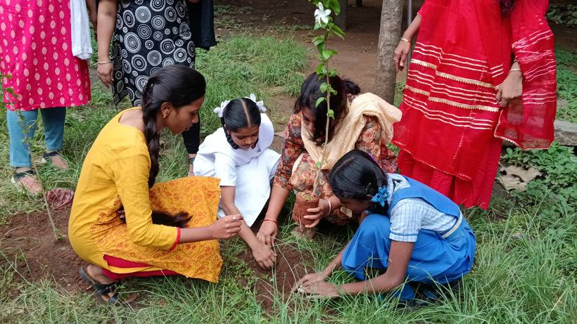

Young people
leading
climate
action
Restless Development backs young people to lead their communities in understanding a changing climate, working with local institutions and building the resilience to anticipate, adapt and respond.
Watch our new film on heat
New film Watch the filmYoung people on living with heatHeat, Health and Young People in Karnataka · Click to play
One of India's greatest untapped climate assets is its young people: not as volunteers or beneficiaries, but as long-term custodians of the places they call home.
The climate crisis is not only an environmental crisis. It is increasingly a crisis of perception, relationships and coordination. Climate change now interacts with water insecurity, livelihoods, health, migration and widening inequality, and it is felt first in informal settlements, villages and tribal and coastal communities.
Over two decades, we have seen first-hand how young people hold lived knowledge of their communities, understand changing local realities, build trust across generations and are uniquely placed to connect citizens, institutions and knowledge systems.
But leadership rarely emerges through passion alone. It needs a sustained ecosystem that builds capabilities, creates agency, provides resources, legitimises young voices, strengthens relationships with institutions and lets young leaders stay rooted in their communities. Investing in youth leadership is therefore investing in lasting local capacity for communities to anticipate, adapt and respond to an increasingly complex climate future.
Helping communities understand how a changing climate connects with their water, waste, heat, health, livelihoods and local economy.
Young people convening neighbours, Panchayats, ward offices and departments, and bringing community voices into decisions that shape their places.
Communities able to anticipate risks, cope with shocks, adapt through continuous learning and transform the systems that shape their future.
Our climate work brings these together through three connected areas.
How change happens
From one young leader to whole systems.
Our theory of change starts with a single young person and moves outward. When young people are trusted with resources, mentoring and connections, change spreads from their own leadership to their communities, and then into the institutions that shape everyone's future.
The change we seek
Young people, especially those most often excluded, lead and shape the climate resilient systems that affect their lives. Fair futures, built from the ground up.
Youth
Leadership
Through the Youth Climate Action Lab, young people in Bengaluru's Shanthinagar co-design and lead climate action in their own neighbourhoods, on waste and on water.
Young people here are not beneficiaries or volunteers. They are changemakers who analyse problems, mobilise their communities and work with civic bodies on local solutions.
In 2024 to 2025, eight Youth Climate Leaders led household waste campaigns, cleaned and greened dumping spots, inspected and restored community water sources, and ran water literacy sessions with women, working with BBMP, BWSSB, schools and faith institutions.

Practical, local climate solutions designed with residents, service providers and local authorities.
Young people move from learning and problem-finding to real change in their neighbourhoods.
Youth, communities and institutions such as BBMP, BWSSB, local leaders and NGOs build solutions together.
Climate awareness turned into measurable action through youth-led campaigns.

Youth
Fund
A catalytic fund, designed with young people, that puts resources and decisions in the hands of young changemakers tackling climate and civic challenges in their own communities.
Young people in climate-vulnerable and marginalised communities do not lack capacity or creativity. What they lack is timely, trusting support that recognises their leadership.
Restless Development has supported 14 grantees leading 15 youth-led initiatives across Karnataka, including five new grantees in the current round: restoring community wells, gamifying climate education, building plastic-free neighbourhoods and piloting climate-resilient farming with young farmers.

Mentoring, leadership development and reflective learning spaces for young changemakers.
Peer learning networks, community partnerships and links to local decision-makers.
Catalytic grants for youth-led solutions on water, climate and civic challenges.
Sharing youth-led stories, recognising leadership and amplifying young voices.

Fair Futures Forum
Climate action cannot work without people.
Restless Development is one of nine organisations in the Fair Futures Forum, a collective connecting the lived experience of Bengaluru's most climate-vulnerable communities to the decisions that shape the city.
Explore the Forum →How we build climate resilience with young people
Agency emerges when leadership is trusted, supported and connected.
We treat the community as the unit of change: an informal settlement, a ward, a Gram Panchayat or a village cluster. Locally rooted young leaders use participatory research, systems mapping, climate literacy and community dialogue to make sense of the realities shaping their place, then co-design and lead responses that strengthen its resilience.
Young leaders are supported through an ecosystem rather than one-off training: mentoring, peer learning, catalytic funding, technical support and connections to Panchayats, ward offices, schools, frontline departments, researchers and civil society. This is how community experience reaches the decisions that shape a place.
Place-rooted young leaders
Young people with lived experience and long-term commitment to their communities, like the Youth Climate Leaders of Shanthinagar.
Community learning spaces
Youth Resource Centres, such as the one in DJ Halli, where young people and residents understand risks, test ideas and act together.
Catalytic funding
Flexible resources, designed and decided with young people, to try locally relevant resilience ideas and grow what works.
Collectives and alliances
Working with partners and institutions so local evidence and voices shape ward, city and state climate action.
In their own words
New research, stories of change and conversations from the young people and communities at the heart of our climate work.
 Change storyFrom helpless to leading changeDeekshitha, Youth Climate Leader
PodcastClimate KaṭṭeConversations on climate and our lives, on Spotify.
Change storyFrom helpless to leading changeDeekshitha, Youth Climate Leader
PodcastClimate KaṭṭeConversations on climate and our lives, on Spotify.
We champion youth causes by leading
Restless Development supports young people to lead in solving the challenges faced by them and their communities. In India we lead programmes on:
- Education
- Skilling
- Livelihoods
- Sexual and Reproductive Health
- Climate Change and Environment
- Mental Health